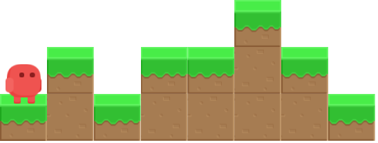
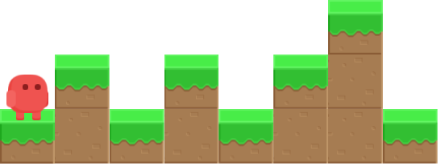
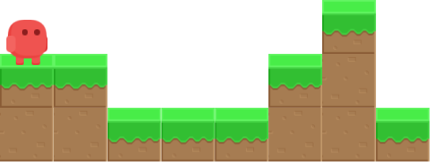
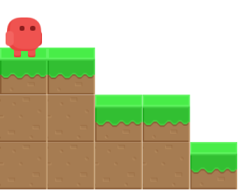
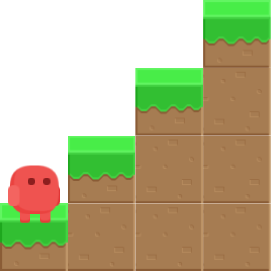
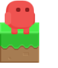

En un joc de plataformes, el personatge ha d'anar fent salts per a poder avançar. En la situació següent, per exemple, haurà de fer 3 salts per a arribar al final:

Podem entendre el mapa del joc com una succesió de nombres que indiquen l'altura del terreny. En el cas anterior es podria definir com:
1 2 1 2 2 3 2 1
En cada salt, el personatge pot avançar només 1 casella.
Input Format
La entrada consta d'una successió de N nombres que indiquen l'altura H del terreny . La successió acaba amb un -1 (que no s'ha tenir en compte).
Constraints
-
Output Format
S'imprimirà el nombre mínim de salts que necessita donar per a arribar al final.
Sample Input 0
1 2 1 2 1 2 3 1 -1
Sample Output 0
4
Explanation 0

Sample Input 1
2 2 1 1 1 2 3 1 -1
Sample Output 1
2
Explanation 1

Sample Input 2
3 3 2 2 1 -1
Sample Output 2
0
Explanation 2

Sample Input 3
1 2 3 4 -1
Sample Output 3
3
Explanation 3

Sample Input 4
1 -1
Sample Output 4
0
Explanation 4

Sample Input 5
1 2 3 4 1 2 3 4 5 6 7 8 1 -1
Sample Output 5
10
Sample Input 6
9 5 1 2 3 1 2 -1
Sample Output 6
3